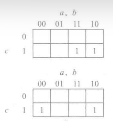

逻辑覆盖｜语法逻辑覆盖
逻辑覆盖
语法逻辑覆盖准则
-
本节考虑的待测的谓词处于一种特殊的形式：析取范式(Disjunctive Normal Form,DNF)
字(literal): 就是子句或是子句的否定（逻辑非运算）项(term): 是由逻辑与连接的一组字- 一个 DNF 谓词就是由逻辑或连接的一组项
- DNF 谓词中的项称为
蕴含项(implicant)，如果一个单独的项为真，那么这意味着这个谓词为真
- DNF 谓词中的项称为
-
本节基于 DNF 测试文献中所使用的惯例
- 用字
相邻表示逻辑与的操作符 +表示逻辑或的操作符- 上横线表示逻辑非的操作符
- 用字
蕴含项覆盖
-
关于 DNF 表示的一种简单的测试方法是对子句赋值使 DNF 表达式中的每个蕴含项被至少一个测试用例满足
- 但是这样的测试方法中，谓词的结果均为真
- 为了处理这个问题，需要测试谓词以及谓词的否定形式
-
蕴含项覆盖(Implicant Coverage, IC)
- 已知一个谓词 f 和非 f ( ) 的 DNF 表达式，对于 f 和 中的每个蕴含项，TR 包括的测试需求要求蕴含项的取值为真
-
示例：
- 考虑谓词 ,
- 它们共有四个蕴含项：{ab, b, , c}
- 在这个例子中满足 IC 只需要两个测试用例： {TTF, FFT}
IC 保证谓词的结果中包含真和假，所以它包含谓词覆盖。
- 使用 IC 的问题：
- 测试用例可能会满足多个蕴含项
- 谓词否定形式的 DNF 表达式不一定具有固定的形式
- 总体来说，IC 是一种比较弱的覆盖标准
极小 DNF
-
附加定义：
- 蕴含项的适当子项
(proper subterm)- 是一个去除了一个或多个子项的蕴含项
- 例如，abc 的适当子项是 ab, bc, ac, a, b, c
- 主蕴含项
(prime implicant)- 是一个蕴含项，并且它的适当子项不能是所在谓词中的一个蕴含项
- 在一个主蕴含项中，移除一个项而不改变谓词的结果是不可能的
- 例如：对于谓词
- 蕴含项 ac 是主蕴含项
- 蕴含项 不是主蕴含项，因为它的适当子项 ac 也是蕴含项
- 冗余
(redundant)- 一个蕴含项是冗余的，如果去掉这个蕴含项不会改变谓词的结果
- 例如表达式：
- 蕴含项 ab 是冗余的，谓词 和原谓词没有区别
- 蕴含项的适当子项
-
一个 DNF 表达式是 极小的(minimal) ，如果其每个蕴含项都是主蕴含项并且没有冗余的蕴含项
- 极小 DNF 表达式可以通过代数计算或卡诺图手动计算来实现
-
已知一个谓词 f 的极小 DNF 表达式，第 i 个蕴含项的 唯一真值点(unique true point, UTP) 指的是对所有子句赋值，使得只有第 i 个蕴含项为真，其余的蕴含项为假
- 注意，如果其他蕴含项的结果不能为假，那么这个蕴含项是冗余的
- 最小表示保证了每个蕴涵项至少存在一个唯一真值点
MUTP
-
多项唯一真值点覆盖(Multiple Unique True Point Coverage, MUTP)
- 已知一个谓词 f 的极小 DNF 表达式，对于 f 中的每个蕴含项 i，选择唯一真值点 (UTP) 使得不在 i 中的子句的取值包括真和假
-
示例：
- 考虑谓词：
- 蕴含项：{}
- 每个蕴含项都是主蕴含项
- 没有冗余的蕴含项
- 唯一真值
- 对于蕴含项 ab: {TTT}
- 对于蕴含项 : {FTF}
- MUTP 要求以上两者
- 考虑谓词：
CUTPNFP
- 对应唯一真值点，存在一个相对应的假植点
- 已知一个谓词 f 的 DNF 表达式，f 中蕴含项 i 的子句 c 的一个 近似假值点(near false point, NFP) 指的是：
- 对所有子句赋值，使得 f 为假
- 但是如果对 c 取反（逻辑非运算）而其他子句取值保持不变，那么 i 的结果将变为真（因此 f 的结果也为真）
- 已知一个谓词 f 的 DNF 表达式，f 中蕴含项 i 的子句 c 的一个 近似假值点(near false point, NFP) 指的是：
这个子句决定整个谓词
-
唯一真值点-近似假值点配对覆盖(Corresponding Unique True Point and Near False Point Pair Coverage, CUTPNFP)
- 已知一个谓词 f 的极小 DNF 表达式，对于每个蕴含项 i 中的每个字 c，TR 包含对于 i 的一个唯一真值点和 i 中 c 的一个近似假值点，使得这两个点的区别只在于 c 的取值
- 显然， CUTPNFP 包含了 RACC
-
示例：
- 考虑谓词：f = ab + cd
- 蕴含项 ab 有 3 个唯一真值点：{TTFF, TTFT, TTTF}
- 对于字 a，可以选取唯一真值点 TTFF 配对近似假值点 FTFF
- 对于字 b，可以选取唯一真值点 TTFF 配对近似假值点 TFFF
- 蕴含项 cd 有 3 个唯一真值点：{FFTT, FTTT, TFTT}
- 对于字 c，可以选取唯一真值点 FFTT 配对近似假值点 FFFT
- 对于字 d，可以选取唯一真值点 FFTT 配对近似假值点 FFTF
- 因此 CUTPNFP 的结果集为 {TTFF, FFTT, TFFF, FTFF, FFTF, FFFT}
- 前两个为唯一真值点，其他为近似假值点
- CUTPNFP 所需要测试用例的粗略数量为
# implicants * # literals - CUTPNFP 不一定可以替代 MUTP
- 蕴含项 ab 有 3 个唯一真值点：{TTFF, TTFT, TTTF}
- 考虑谓词：f = ab + cd
MNFP
-
多项近似假值点覆盖(Multiple Near False Point Coverage, MNFP)
- 已知一个谓词 f 的极小 DNF 表达式，对于每个蕴含项 i 中的每个字 c, 选择近似假值点(NFP) 使得不在 i 中的子句取值包括真和假
-
示例：
-
- 蕴含项：{}
- 真值点：
- 对于蕴含项 ab: {TTT, TTF}
- 对于 a 而言
- c = true 的 NFP 为 FTT
- c = false 的 NFP 不可行，因为 FTF 使得谓词 f 为真
- 对于 b 而言，NFP 为 {TFT, TFF}
- 对于 a 而言
- 对于蕴含项 : {FTF, TTF}
- 对于 b 而言，NFP 为{TFF, FFF}
- 对于 而言，NFP 为 FTT
- 对于蕴含项 ab: {TTT, TTF}
- 因此，对于谓词 f，它的 MNFP 集合{FTT, TFT, TFF, FFF}
-
MUMCUT ：已知一个谓词 f 的极小 DNF 表达式，对 f 应用 MUTP、CUTPNFP 和 MNFP
DNF 的错误类别
关键思想是故障类与测试相关: 保证检测特定故障的测试集也保证检测附加故障
-
MUTP 可以检测字插入故障(LIF)
- 唯一不能被检测的故障类型是 LOF 和 ORF*
- 当 MUTP 不是对于谓词中所有的蕴含项都可行的话，不能检测 LIF 故障
-
当 CUTPNFP 可行的时候，CUTPNFP 可以有效检测出：
- LOF 故障
- 因为对于项 i 中的每个子句，CUTPNFP 要求一个唯一真值点和一个近似假值点
- 这两个测试用例在子句 c 的取值不同
- 因此如果 c 被删除了，这两个测试结果会导致相同的值
- 因为对于项 i 中的每个子句，CUTPNFP 要求一个唯一真值点和一个近似假值点
- ORF*, LNF, TNF, ENF 故障
- LOF 故障
CUTPNFP 不一定能检测到 LIF 故障，因此不能替代 MUTP
卡诺图
Karnaugh Maps
- 卡诺图使用表格表示带有特殊属性的谓词，表中相邻项的组合于简单的 DNF 表达式相对应
-
利用卡诺图进行谓词化简：
- 将邻近的标记为 1 的单元分组到一个大小为 2k 的矩形中
- 再将没有临近标记为 1 的单元构成大小为 1 的矩形
- 分组间允许重叠
-
示例：

卡诺图从左到右，从上到下，在边上都是连接着的
- 目标：对用于测试逻辑表达式的概念应用卡诺图
- 识别 子句何时确定谓词
- 识别 谓词的否定
- 识别 主蕴涵和冗余蕴涵
- 识别 独特的真点
- 识别 唯真点/近假点对
- 判断字句决定谓词的条件
- 对于子句 c, 找到 c 的值改变并且谓词 p 的真值标记也改变的组
- 判断谓词取反
- 将原本标记为 t 的部分置空，将原本空的部分标记为 t
- 然后将新的图化简即可
- 判断主蕴含项与冗余
- 利用卡诺图将谓词化简至最简即可得到主蕴含项
- 如果给出的蕴含项被一个最简形式所取范围包含，则该蕴含项不是主蕴含项

- 如果给出的蕴含项被多个最简形式所取范围包含，则该蕴含项是冗余的

- 利用卡诺图将谓词化简至最简即可得到主蕴含项
- 找唯一真值点
- 即图中取值为真且不存在最简范围重合的点
- 即图中取值为真且不存在最简范围重合的点
- 找 MUTP
- 对于 MUTP，可以确定唯一的真值点，其中的子句不在项中同时具有两个真值
本博客所有文章除特别声明外，均采用 CC BY-SA 4.0 协议 ，转载请注明出处！